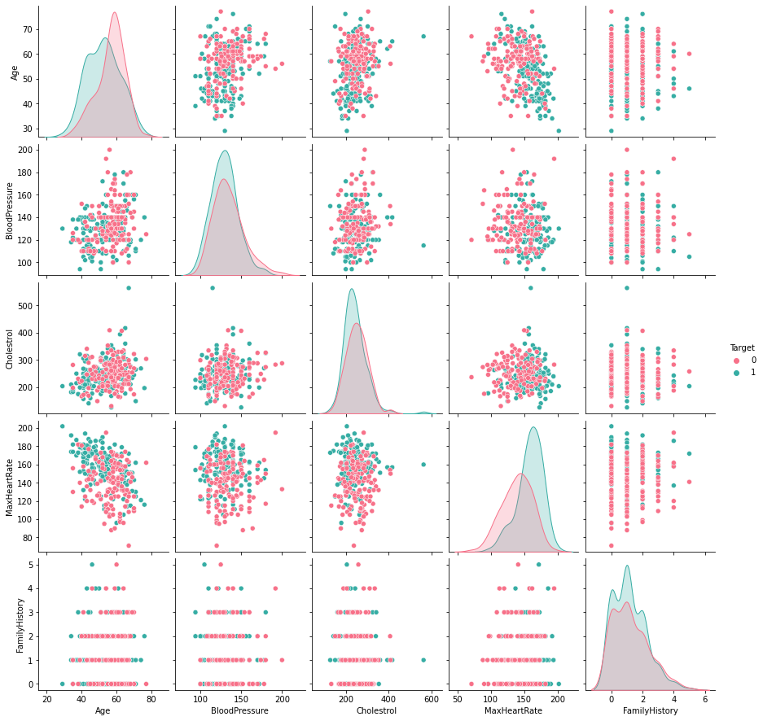

Applied ML Assignment 1#
(This notebook along with it's PDF version can be found in this Github Repo)#
Heart Attack Analaysis#
Introduction#
A heart attack occurs when an artery supplying your heart with blood and oxygen becomes blocked. A blood clot can form and block your arteries, causing a heart attack. This Heart Attack Analysis helps to understand the chance of attack occurrence in persons based on varied health conditions.
Dataset#
The dataset is Heart_Attack_Analysis_Data.csv. It has been uploaded to elearn.
This dataset contains data about some hundreds of patients mentioning:
- Age
- Sex
- Exercise Include Angina(1=YES, 0=NO)
- CP_Type (Chest Pain) (Value 1: typical angina, Value 2: atypical angina, Value 3: non-anginal pain, Value 4: asymptomatic)
- ECG Results
- Blood Pressure
- Cholesterol
- Blood Sugar
- Family History (Number of persons affected in the family)
- Maximum Heart Rate
- Target (0 = LESS CHANCE , 1 = MORE CHANCE)
Aim#
- Building a Predictive Model using Naïve Bayesian Approach (Which features decide heart attack?)
- Comment on the performance of this model using AUC-ROC, Precision, Recall, F_score, Accuracy
You need to
1. Preprocess the data to enhance quality
2. Carry out descriptive summarization of data and make observations
3. Identify relevant, irrelevant attributes for building model.
4. Use data visualization tools and make observations
5. Carry out the chosen analytic task. Show results including intermediate results, as needed
6. Evaluate the solution
Following are some points for you to take note of, while doing the assignment in Jupyter Notebook:
- State all your assumptions clearly
- List all intermediate steps and learnings
- Mention your observations/findings
Submission Plan#
The following will be done in this notebook:
1. Verify the datatypes of the values given in the dataset and validate with the information given in the document.
2. Check for invalid values based on domain knowledge by checking if values are present in humanly possible ranges.
3. Figure out which columns are numeric and categorical based on the unique values each column has and based on information given in the assignment document.
4. Check for trends among numerical features and among categorical features to see if feature reduction can be done (via pairplots etc)
5. Check which numerical attributes are relevant and which are irrelevant and drop irrelevant ones.
6. Scale numerical attributes with a standard scaler.
7. Train a gnb MODEL 1 where it is fit with data where only scaling is done to numerical data.
8. Check for outliers via boxplots and remove them with IQR method.
9. Train a gnb MODEL 2 where it is fit with data where scaling is done to numerical data, and outliers are removed using the IQR method.
10. One hot encode categorical data.
11. Train a gnb MODEL 3 where it is fit with data where scaling is done to numerical data, outliers are removed using the IQR method and one hot encoding is done to categorical data.
We will then compare the accuracy, Precision, Recall, F-Score and AOC-ROC of three models trained.
My Submission#
Importing necessary packages#
import matplotlib.pyplot as plt
import numpy as np
import pandas as pd
import scipy.stats as stats
import seaborn as sb
import warnings
from sklearn.metrics import accuracy_score, recall_score, precision_score, f1_score, confusion_matrix, ConfusionMatrixDisplay, precision_recall_fscore_support, roc_auc_score, roc_curve
from sklearn.model_selection import train_test_split
from sklearn.naive_bayes import GaussianNB
from sklearn.preprocessing import StandardScaler
warnings.filterwarnings('ignore')
Viewing Data#
Check the shape of the dataframe loaded into memory from the CSV file and see the datatypes used in the dataset given
df = pd.read_csv("./Heart_Attack_Analysis_Data.csv")
print("Dataframe Shape: {}".format(df.shape))
print("----------------------------------\n")
print("With following data types:\n")
df.info()
print("----------------------------------\n")
print("First 5 rows of Dataframe:")
df.head()
Dataframe Shape: (303, 11)
----------------------------------
With following data types:
<class 'pandas.core.frame.DataFrame'>
RangeIndex: 303 entries, 0 to 302
Data columns (total 11 columns):
# Column Non-Null Count Dtype
--- ------ -------------- -----
0 Age 303 non-null int64
1 Sex 303 non-null int64
2 CP_Type 303 non-null int64
3 BloodPressure 303 non-null int64
4 Cholestrol 303 non-null int64
5 BloodSugar 303 non-null int64
6 ECG 303 non-null int64
7 MaxHeartRate 303 non-null int64
8 ExerciseAngina 303 non-null int64
9 FamilyHistory 303 non-null int64
10 Target 303 non-null int64
dtypes: int64(11)
memory usage: 26.2 KB
----------------------------------
First 5 rows of Dataframe:
| Age | Sex | CP_Type | BloodPressure | Cholestrol | BloodSugar | ECG | MaxHeartRate | ExerciseAngina | FamilyHistory | Target | |
|---|---|---|---|---|---|---|---|---|---|---|---|
| 0 | 63 | 1 | 3 | 145 | 233 | 1 | 0 | 150 | 0 | 2 | 1 |
| 1 | 37 | 1 | 2 | 130 | 250 | 0 | 1 | 187 | 0 | 1 | 1 |
| 2 | 41 | 0 | 1 | 130 | 204 | 0 | 0 | 172 | 0 | 0 | 1 |
| 3 | 56 | 1 | 1 | 120 | 236 | 0 | 1 | 178 | 0 | 1 | 1 |
| 4 | 57 | 0 | 0 | 120 | 354 | 0 | 1 | 163 | 1 | 0 | 1 |
print("Stats on Dataframe:")
df.describe()
Stats on Dataframe:
| Age | Sex | CP_Type | BloodPressure | Cholestrol | BloodSugar | ECG | MaxHeartRate | ExerciseAngina | FamilyHistory | Target | |
|---|---|---|---|---|---|---|---|---|---|---|---|
| count | 303.000000 | 303.000000 | 303.000000 | 303.000000 | 303.000000 | 303.000000 | 303.000000 | 303.000000 | 303.000000 | 303.000000 | 303.000000 |
| mean | 54.366337 | 0.683168 | 0.966997 | 131.623762 | 246.264026 | 0.148515 | 0.528053 | 149.646865 | 0.326733 | 1.204620 | 0.544554 |
| std | 9.082101 | 0.466011 | 1.032052 | 17.538143 | 51.830751 | 0.356198 | 0.525860 | 22.905161 | 0.469794 | 1.096825 | 0.498835 |
| min | 29.000000 | 0.000000 | 0.000000 | 94.000000 | 126.000000 | 0.000000 | 0.000000 | 71.000000 | 0.000000 | 0.000000 | 0.000000 |
| 25% | 47.500000 | 0.000000 | 0.000000 | 120.000000 | 211.000000 | 0.000000 | 0.000000 | 133.500000 | 0.000000 | 0.000000 | 0.000000 |
| 50% | 55.000000 | 1.000000 | 1.000000 | 130.000000 | 240.000000 | 0.000000 | 1.000000 | 153.000000 | 0.000000 | 1.000000 | 1.000000 |
| 75% | 61.000000 | 1.000000 | 2.000000 | 140.000000 | 274.500000 | 0.000000 | 1.000000 | 166.000000 | 1.000000 | 2.000000 | 1.000000 |
| max | 77.000000 | 1.000000 | 3.000000 | 200.000000 | 564.000000 | 1.000000 | 2.000000 | 202.000000 | 1.000000 | 5.000000 | 1.000000 |
All columns are integer type and all columns have a value for all rows (303 not null), which means that all values are filled and there are no missing values.
Data Preprocessing#
Now to check certain columns with humanly possible ranges based on domain knowledge#
The following are the assumed ranges for these columns:
1. 0 < Age <= 100 years
2. 90 <= BloodPressure <= 200
3. 60 <= MaxHeartRate <= 220
print("\nMinimum Age = {}".format(df["Age"].min()))
print("Maximum Age = {}".format(df["Age"].max()))
print("\nMinimum Blood Pressure = {}".format(df["BloodPressure"].min()))
print("Maximum Blood Pressure = {}".format(df["BloodPressure"].max()))
print("\nMinimum Heart Rate = {}".format(df["MaxHeartRate"].min()))
print("Maximum Heart Rate = {}".format(df["MaxHeartRate"].max()))
Minimum Age = 29
Maximum Age = 77
Minimum Blood Pressure = 94
Maximum Blood Pressure = 200
Minimum Heart Rate = 71
Maximum Heart Rate = 202
All of the mentioned columns have values within acceptable ranges.
Checking number of unique values for each column#
Column Name -> Unique Number count
for column in list(df.columns):
print("{} -> {}".format(column, df[column].value_counts().shape[0]))
Age -> 41
Sex -> 2
CP_Type -> 4
BloodPressure -> 49
Cholestrol -> 152
BloodSugar -> 2
ECG -> 3
MaxHeartRate -> 91
ExerciseAngina -> 2
FamilyHistory -> 6
Target -> 2
Taking columns that have a maximum of 4 unique values (And based on information given in assignment document) as categorical and the rest as numeric:
category_list = ["Sex", "CP_Type", "BloodSugar", "ECG", "ExerciseAngina"]
numeric_list = ["Age", "BloodPressure", "Cholestrol", "MaxHeartRate", "FamilyHistory"]
Checking for trends in numeric features through Pair Plots#
df_number = df.loc[:, numeric_list]
df_number["Target"] = df["Target"]
sb.pairplot(df_number, hue = "Target", palette="husl")
plt.show()

The pair plots do not show any particular trends that can be used to reduce numerical features. We do see a slight relation between age and max heart rate but the plot is scattered enough to not relate them together.
Checking frequncy of each categorical feature wrt target column to check how well it is balanced#
df_category = df.loc[:, category_list]
df_category["Target"] = df["Target"]
for i in category_list:
plt.figure()
sb.countplot(x = i, data = df_category, hue = "Target", palette="husl")
plt.title(i)


Here we see that there is very little rows that have ECG value = 2 and similarly very little rows for BloodSugar value = 1.#
Checking relevant numerical features#
To do this we shall use the f_oneway function from scipy.stats. This function performs one-way ANOVA(Analysis of Variance) to test the null hypothesis that two groups of data have the same population mean.
A feature is only relevant if the sample from a particular feature for a target category is statistically very different from another sample from the same feature for another target category.
Checking relevance of Age#
result = stats.f_oneway(df["Age"][df["Target"] == 0],
df["Age"][df["Target"] == 1])
result.pvalue
7.524801303442268e-05
The pvalue is < 0.05. This shows that the means of the two distributions (One with Age wrt less chance of getting heart attack and the other with more chance of getting heart attack) are significantly different statistically, hence Age is relevant
Checking relevance of BloodPressure#
result = stats.f_oneway(df["BloodPressure"][df["Target"] == 0],
df["BloodPressure"][df["Target"] == 1])
result.pvalue
0.011546059200233376
The pvalue is < 0.05. This shows that the means of the two distributions (One with BloodPressure wrt less chance of getting heart attack and the other with more chance of getting heart attack) are significantly different statistically, hence BloodPressure is relevant
Checking relevance of Cholestrol#
result = stats.f_oneway(df["Cholestrol"][df["Target"] == 0],
df["Cholestrol"][df["Target"] == 1])
result.pvalue
0.1387903269560108
The pvalue is > 0.05. This shows that the means of the two distributions (One with Cholestrol wrt less chance of getting heart attack and the other with more chance of getting heart attack) are not significantly different statistically, hence Cholestrol is irrelevant
Checking relevance of MaxHeartRate#
result = stats.f_oneway(df["MaxHeartRate"][df["Target"] == 0],
df["MaxHeartRate"][df["Target"] == 1])
result.pvalue
1.6973376386560805e-14
The pvalue is < 0.05. This shows that the means of the two distributions (One with MaxHeartRate wrt less chance of getting heart attack and the other with more chance of getting heart attack) are significantly different statistically, hence MaxHeartRate is relevant
Checking relevance of FamilyHistory#
result = stats.f_oneway(df["FamilyHistory"][df["Target"] == 0],
df["FamilyHistory"][df["Target"] == 1])
result.pvalue
0.6172651404419242
The pvalue is > 0.05. This shows that the means of the two distributions (One with FamilyHistory wrt less chance of getting heart attack and the other with more chance of getting heart attack) are not significantly different statistically, hence FamilyHistory is irrelevant
Dropping the irrelevant features#
df.drop(["Cholestrol"], axis = 1, inplace= True)
df.drop(["FamilyHistory"], axis = 1, inplace= True)
numeric_list.remove("Cholestrol")
numeric_list.remove("FamilyHistory")
df.head()
| Age | Sex | CP_Type | BloodPressure | BloodSugar | ECG | MaxHeartRate | ExerciseAngina | Target | |
|---|---|---|---|---|---|---|---|---|---|
| 0 | 63 | 1 | 3 | 145 | 1 | 0 | 150 | 0 | 1 |
| 1 | 37 | 1 | 2 | 130 | 0 | 1 | 187 | 0 | 1 |
| 2 | 41 | 0 | 1 | 130 | 0 | 0 | 172 | 0 | 1 |
| 3 | 56 | 1 | 1 | 120 | 0 | 1 | 178 | 0 | 1 |
| 4 | 57 | 0 | 0 | 120 | 0 | 1 | 163 | 1 | 1 |
Scaling the numeric attributes in the dataframe with a standard scaler#
scaler = StandardScaler()
df[numeric_list] = scaler.fit_transform(df[numeric_list])
df.head()
| Age | Sex | CP_Type | BloodPressure | BloodSugar | ECG | MaxHeartRate | ExerciseAngina | Target | |
|---|---|---|---|---|---|---|---|---|---|
| 0 | 0.952197 | 1 | 3 | 0.763956 | 1 | 0 | 0.015443 | 0 | 1 |
| 1 | -1.915313 | 1 | 2 | -0.092738 | 0 | 1 | 1.633471 | 0 | 1 |
| 2 | -1.474158 | 0 | 1 | -0.092738 | 0 | 0 | 0.977514 | 0 | 1 |
| 3 | 0.180175 | 1 | 1 | -0.663867 | 0 | 1 | 1.239897 | 0 | 1 |
| 4 | 0.290464 | 0 | 0 | -0.663867 | 0 | 1 | 0.583939 | 1 | 1 |
Model 1#
Training a Guassian Naive Bayes model with the data (With scaling done to numerical features)#
df1 = df.copy()
X = df1.drop(["Target"], axis = 1)
y = df1[["Target"]]
Split X and y to training and test data#
X_train, X_test, y_train, y_test = train_test_split(X, y, test_size = 0.20, random_state = 3)
print("X_train: {}".format(X_train.shape))
print("y_train: {}".format(y_train.shape))
print("X_test: {}".format(X_test.shape))
print("y_test: {}".format(y_test.shape))
X_train: (242, 8)
y_train: (242, 1)
X_test: (61, 8)
y_test: (61, 1)
Prediction Analysis:#
The following is the analysis for a naive bayes model that was trained with the following done on the data:
1. Scale the numerical features with a standard scaler
2. Split the data into training and test data with a 20% test data
gnb = GaussianNB()
gnb.fit(X_train, y_train)
y_pred = gnb.predict(X_test)
print("Model 1 Results:")
print("----------------------------------\n")
ns_probs = [0 for _ in range(len(y_test))]
ns_auc = roc_auc_score(y_test, ns_probs)
ns_fpr, ns_tpr, _ = roc_curve(y_test, ns_probs)
y_probs = gnb.predict_proba(X_test)
gnb_probs = y_probs[:, 1]
gnb_auc = roc_auc_score(y_test, gnb_probs)
gnb_fpr, gnb_tpr, temp = roc_curve(y_test, gnb_probs)
plt.plot(ns_fpr, ns_tpr, linestyle='--', label='No Skill')
plt.plot(gnb_fpr, gnb_tpr, marker='.', label='Gaussian NB')
plt.xlabel('False Positive Rate')
plt.ylabel('True Positive Rate')
plt.legend()
plt.show()
print("----------------------------------\n")
print("AUC-ROC Score: {0:0.2f}%".format(roc_auc_score(y_test, gnb_probs) * 100))
print("Precision Score: {0:0.2f}%".format(precision_score(y_test,y_pred) * 100))
print("Recall Score: {0:0.2f}%".format(recall_score(y_test,y_pred) * 100))
print("F Score: {0:0.2f}%".format(f1_score(y_test,y_pred) * 100))
print("Accuracy Score: {0:0.2f}%".format(accuracy_score(y_test,y_pred) * 100))
print("\n----------------------------------\n")
print("Confusion matrix:")
cm = confusion_matrix(y_pred,y_test)
ConfusionMatrixDisplay(cm,display_labels =["Less Chance","More Chance"]).plot()
plt.show()
Model 1 Results:
----------------------------------
----------------------------------
AUC-ROC Score: 85.71%
Precision Score: 82.50%
Recall Score: 82.50%
F Score: 82.50%
Accuracy Score: 77.05%
----------------------------------
Confusion matrix:
Investigating dataset for outliers#
Analyzing the boxplot for scaled numeric attributes to check for outliers#
plt.figure(figsize=(10,8))
sb.boxplot(data=df[numeric_list], palette="husl")
plt.show()
print("\n----------------------------------\n")

----------------------------------
We can see some outlier values for blood pressure and max heart rate. we can drop these outliers using the IQR method.
Dropping outliers with IQR method#
Going with \(+/- 1.6 \times IQR\) to accomodate data upto \(3\sigma\) from the mean to remove the outliers.
print("Original shape of dataframe: {}".format(df.shape))
for i in numeric_list:
Q25 = np.percentile(df.loc[:, i],25)
Q75 = np.percentile(df.loc[:, i],75)
IQR = Q75 - Q25
upper_bound = np.where(df.loc[:, i] >= (Q75 + 1.6*IQR))
lower_bound = np.where(df.loc[:, i] <= (Q25 - 1.6*IQR))
df.drop(upper_bound[0], inplace = True)
df.drop(lower_bound[0], inplace = True)
print("Shape of dataframe after dropping outliers: {}".format(df.shape))
Original shape of dataframe: (303, 9)
Shape of dataframe after dropping outliers: (293, 9)
Model 2#
Training a Guassian Naive Bayes model with the data (With scaling done to numerical features and removing outliers)#
df2 = df.copy()
X = df2.drop(["Target"], axis = 1)
y = df2[["Target"]]
Split X and y to training and test data#
X_train, X_test, y_train, y_test = train_test_split(X, y, test_size = 0.20, random_state = 3)
print("X_train: {}".format(X_train.shape))
print("y_train: {}".format(y_train.shape))
print("X_test: {}".format(X_test.shape))
print("y_test: {}".format(y_test.shape))
X_train: (234, 8)
y_train: (234, 1)
X_test: (59, 8)
y_test: (59, 1)
Prediction Analysis:#
The following is the analysis for a naive bayes model that was trained with the following done on the data:
1. Scale the numerical features with a standard scaler
2. Remove outliers 1.6 times IQR below and above the Q1 and Q3 respectively
3. Split the data into training and test data with a 20% test data
gnb = GaussianNB()
gnb.fit(X_train, y_train)
y_pred = gnb.predict(X_test)
print("Model 2 Results:")
print("----------------------------------\n")
ns_probs = [0 for _ in range(len(y_test))]
ns_fpr, ns_tpr, _ = roc_curve(y_test, ns_probs)
y_probs = gnb.predict_proba(X_test)
gnb_probs = y_probs[:, 1]
gnb_fpr, gnb_tpr, temp = roc_curve(y_test, gnb_probs)
plt.plot(ns_fpr, ns_tpr, linestyle='--', label='No Skill')
plt.plot(gnb_fpr, gnb_tpr, marker='.', label='Gaussian NB')
plt.xlabel('False Positive Rate')
plt.ylabel('True Positive Rate')
plt.legend()
plt.show()
print("----------------------------------\n")
print("AUC-ROC Score: {0:0.2f}%".format(roc_auc_score(y_test, gnb_probs) * 100))
print("Precision Score: {0:0.2f}%".format(precision_score(y_test,y_pred) * 100))
print("Recall Score: {0:0.2f}%".format(recall_score(y_test,y_pred) * 100))
print("F Score: {0:0.2f}%".format(f1_score(y_test,y_pred) * 100))
print("Accuracy Score: {0:0.2f}%".format(accuracy_score(y_test,y_pred) * 100))
print("\n----------------------------------\n")
print("Confusion matrix:")
cm = confusion_matrix(y_pred,y_test)
ConfusionMatrixDisplay(cm,display_labels =["Less Chance","More Chance"]).plot()
plt.show()
Model 2 Results:
----------------------------------
----------------------------------
AUC-ROC Score: 85.92%
Precision Score: 84.21%
Recall Score: 80.00%
F Score: 82.05%
Accuracy Score: 76.27%
----------------------------------
Confusion matrix:

Finding correlation between features through a heatmap#
corr_features = set()
corr_matrix = df.corr()
plt.figure(figsize = (10,8))
sb.heatmap(corr_matrix, annot = True, cmap="magma")
plt.show()
for i in range(len(corr_matrix .columns)):
for j in range(i):
if abs(corr_matrix.iloc[i, j]) > 0.5:
colname = corr_matrix.columns[i]
corr_features.add(colname)
print("\n----------------------------------\n")
print("The number of correlating features: {}".format(len(corr_features)))
print("The correlating features are: {}".format(corr_features))
print("\n----------------------------------\n")
----------------------------------
The number of correlating features: 0
The correlating features are: set()
----------------------------------
None of the features seem to correlate with each other and hence we cannot do feature reduction
Model 3#
Training a Guassian Naive Bayes model with the data (With scaling done to numerical features, outliers removed and one hot encoding categorical features)#
Original dataframe:#
df3 = df.copy()
df3.head()
| Age | Sex | CP_Type | BloodPressure | BloodSugar | ECG | MaxHeartRate | ExerciseAngina | Target | |
|---|---|---|---|---|---|---|---|---|---|
| 0 | 0.952197 | 1 | 3 | 0.763956 | 1 | 0 | 0.015443 | 0 | 1 |
| 1 | -1.915313 | 1 | 2 | -0.092738 | 0 | 1 | 1.633471 | 0 | 1 |
| 2 | -1.474158 | 0 | 1 | -0.092738 | 0 | 0 | 0.977514 | 0 | 1 |
| 3 | 0.180175 | 1 | 1 | -0.663867 | 0 | 1 | 1.239897 | 0 | 1 |
| 4 | 0.290464 | 0 | 0 | -0.663867 | 0 | 1 | 0.583939 | 1 | 1 |
One hot encoded dataframe:#
df3 = pd.get_dummies(df3, columns = category_list, drop_first = True)
df3.head()
| Age | BloodPressure | MaxHeartRate | Target | Sex_1 | CP_Type_1 | CP_Type_2 | CP_Type_3 | BloodSugar_1 | ECG_1 | ECG_2 | ExerciseAngina_1 | |
|---|---|---|---|---|---|---|---|---|---|---|---|---|
| 0 | 0.952197 | 0.763956 | 0.015443 | 1 | 1 | 0 | 0 | 1 | 1 | 0 | 0 | 0 |
| 1 | -1.915313 | -0.092738 | 1.633471 | 1 | 1 | 0 | 1 | 0 | 0 | 1 | 0 | 0 |
| 2 | -1.474158 | -0.092738 | 0.977514 | 1 | 0 | 1 | 0 | 0 | 0 | 0 | 0 | 0 |
| 3 | 0.180175 | -0.663867 | 1.239897 | 1 | 1 | 1 | 0 | 0 | 0 | 1 | 0 | 0 |
| 4 | 0.290464 | -0.663867 | 0.583939 | 1 | 0 | 0 | 0 | 0 | 0 | 1 | 0 | 1 |
X = df3.drop(["Target"], axis = 1)
y = df3[["Target"]]
Split X and y to training and test data#
X_train, X_test, y_train, y_test = train_test_split(X, y, test_size = 0.20, random_state = 3)
print("X_train: {}".format(X_train.shape))
print("y_train: {}".format(y_train.shape))
print("X_test: {}".format(X_test.shape))
print("y_test: {}".format(y_test.shape))
X_train: (234, 11)
y_train: (234, 1)
X_test: (59, 11)
y_test: (59, 1)
Prediction Analysis:#
The following is the analysis for a naive bayes model that was trained with the following done on the data:
1. One hot encode categorical features
2. Scale the numerical features with a standard scaler
3. Remove outliers 1.6 times IQR below and above the Q1 and Q3 respectively
4. Split the data into training and test data with 20% test data
gnb = GaussianNB()
gnb.fit(X_train, y_train)
y_pred = gnb.predict(X_test)
print("Model 3 Results:")
print("----------------------------------\n")
ns_probs = [0 for _ in range(len(y_test))]
ns_fpr, ns_tpr, _ = roc_curve(y_test, ns_probs)
y_probs = gnb.predict_proba(X_test)
gnb_probs = y_probs[:, 1]
gnb_fpr, gnb_tpr, temp = roc_curve(y_test, gnb_probs)
plt.plot(ns_fpr, ns_tpr, linestyle='--', label='No Skill')
plt.plot(gnb_fpr, gnb_tpr, marker='.', label='Gaussian NB')
plt.xlabel('False Positive Rate')
plt.ylabel('True Positive Rate')
plt.legend()
plt.show()
print("----------------------------------\n")
print("AUC-ROC Score: {0:0.2f}%".format(roc_auc_score(y_test, gnb_probs) * 100))
print("Precision Score: {0:0.2f}%".format(precision_score(y_test,y_pred) * 100))
print("Recall Score: {0:0.2f}%".format(recall_score(y_test,y_pred) * 100))
print("F Score: {0:0.2f}%".format(f1_score(y_test,y_pred) * 100))
print("Accuracy Score: {0:0.2f}%".format(accuracy_score(y_test,y_pred) * 100))
print("\n----------------------------------\n")
print("Confusion matrix:")
cm = confusion_matrix(y_pred,y_test)
ConfusionMatrixDisplay(cm,display_labels =["Less Chance","More Chance"]).plot()
plt.show()
Model 3 Results:
----------------------------------

----------------------------------
AUC-ROC Score: 90.53%
Precision Score: 85.00%
Recall Score: 85.00%
F Score: 85.00%
Accuracy Score: 79.66%
----------------------------------
Confusion matrix:

Comparing the results of the three models:#
From the results obtained from above prediction analysis, we can tabulate them together below:
| Model/Metric | AUC-ROC | Precision | Recall | F_Score | Accuracy |
|---|---|---|---|---|---|
| Model 1 | 85.71% | 82.50% | 82.50% | 82.05% | 77.05% |
| Model 2 | 85.92% | 84.21% | 80.00% | 82.05% | 76.27% |
| Model 3 | 90.53% | 85.00% | 85.00% | 85.00% | 79.66% |
This shows that the maximum Accuracy is obtained when scaling is applied on numerical attributes with outliers being dropped and one hot encoding is done to the categorical features (Model 3).
We can also see that Model 2 has lesser accuracy but higher Precision than Model 1. This shows that Model 1 is overfitted.
We know that:
\(Precision = \frac{True Positive}{True Positive + False Positive}\)
and
\(Recall = \frac{True Positive}{True Positive + False Negative}\)
Upon viewing the confusion matrix for each model it is clear that lesser false negatives and false positives are recorded in Model 3 in comparison to Model 1 and Model 2 which attributes to the better Precision and Recall scores in Model 3.
Finally, we know that:
\(F = 2 \times \frac{Precision \times Recall}{Precision + Recall}\)
This goes to show why Model 3 has better F score since its recall and precision is better than the other two models.
Tags: !AMLIndex Assignments